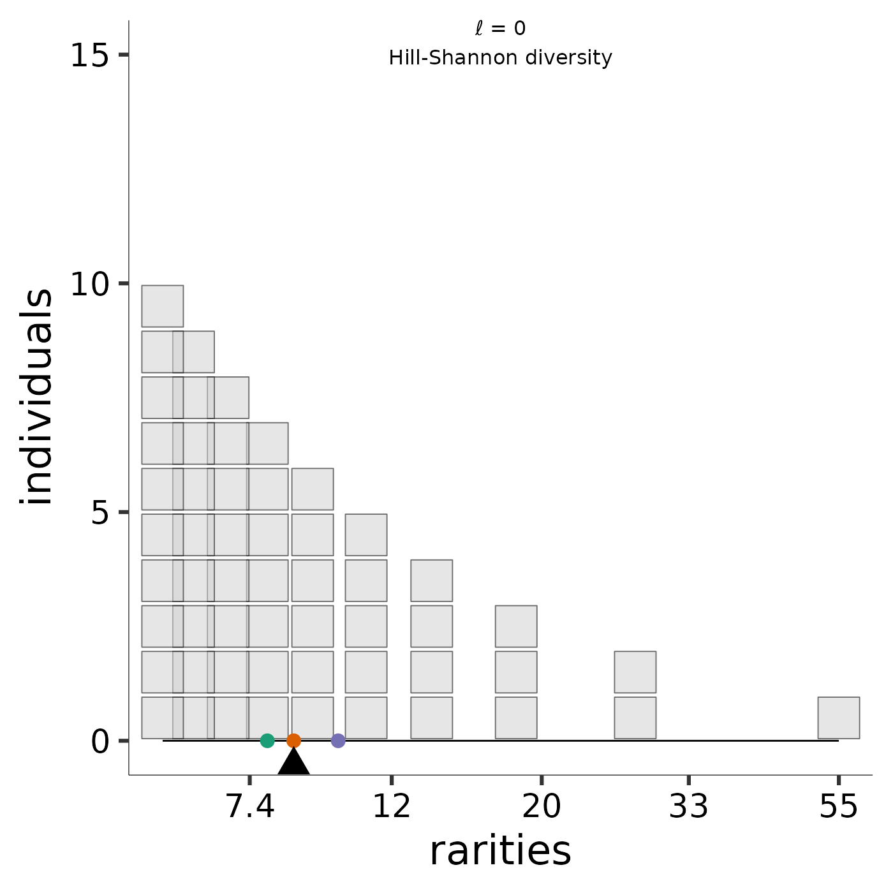

seesaw_sugar.Rdggplot sugar for rarity plots
seesaw_sugar(title = NULL, l, unicode_in_title = TRUE, ...)Character string, or NULL.
Scaling exponent for the mean, can be any real number.
Logical, include unicode ell and its value.
Additional arguments passed to other functions.
ggplot objects to add to rarity plot
p1 <- rarity_plot(1:10, l = 0)
#>
#> `rarity_plot()` expects a square viewport (likely issues in the RStudio
#> plotting device) and resizes points based on `min(dev.size()` and ``noco`
#> (for number of columns).
#>
#> Selecting `lines = TRUE` will plot stacks of individuals as a line
#> element, which tends to be more robust to window size.
#>
#> Setting `lines = TRUE` may be the best way to deal with overplotting,
#> which results from several species with similar but not identical
#> rarities.
#> [1] "diversity = 8.59586884212865" "community size = 55"
#> [3] "max observed rarity = 55" "min observed rarity = 5.5"
p1
p1 + seesaw_sugar(title = "Hill-Shannon diversity"
, l = 0)
#> Scale for colour is already present.
#> Adding another scale for colour, which will replace the existing scale.
